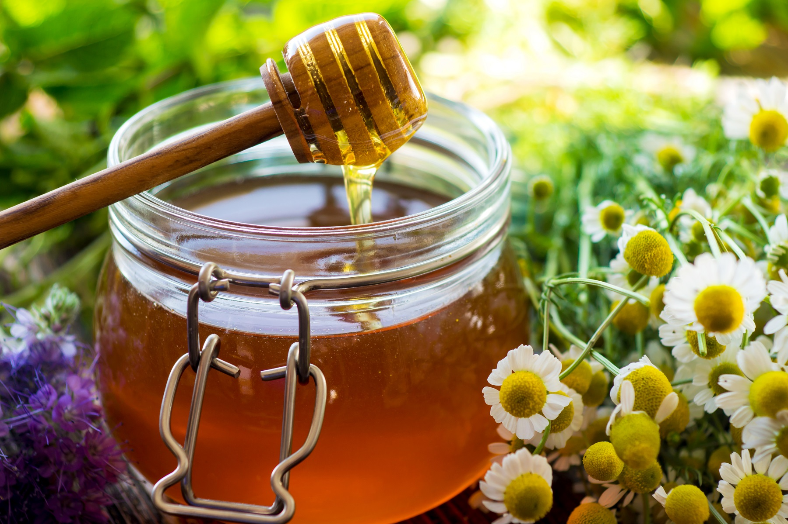
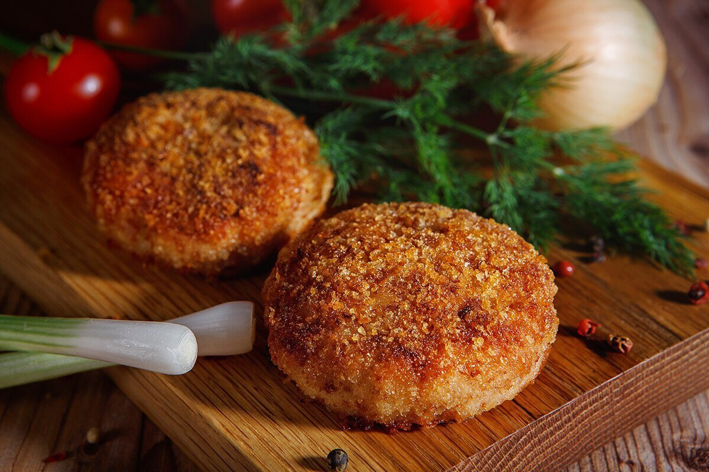

Добро пожаловать на сайт кулинарных рецептов!
Скорее ознакомьтесь с рецептами кулинарных рецептов на нашем сайте.
Мы рады видеть Вас на нашем сайте и искренне надеемся на то, что у наших дорогих посетителей получится найти желаемые рецепты, подходящую под вкус и настроение.
Кулинарные хитрости
Категории яиц
Яйца делятся на категории в зависимости от массы. Руководствуемся простым правилом — чем больше цифра, тем меньше размер:
- «С3» — самые маленькие яйца весом 35–44,9 г;
- «С2» — 2-я категория, весом 45–54,9 г;
- «С1» — еще крупнее, 55–64,9 г;
- «СО» — отборные, весом 65–74,9 г;
- «СВ» — высшая категория весом более 75 грамм.
Спасение засахаренного мёда
Если Ваш мёд загустел или засахарился то растопите его на водяной бане. Для этого достаточно поставить емкость с мёдом в кастрюлю с горячей водой и подождать.
Идеальные котлетки
Для приготовления котлет идеальной круглой формы используйте любой обыкновенный стакан и прокручивая фарш для котлет внутри него круговыми движениями. Аналогичным образом можно приготовить сырники и иные изделия из теста.
Вкусные классические сочетания
При готовке правильно учитывать сочетаемость ингредиентов. Несколько наиболее вкусных групп продуктов представлены ниже:
- Птица и фрукты: например, курица с ананасами, утка с яблоками/мандаринами.
- Рыба/курица/мясо с овощами: хорошие углеводы и белки.
- Помидоры, чеснок, болгарский перец: отличная основа для соусов.
- Рыба и лимон: К пахучей рыбе добавляют лимон, чтобы сгладить слишком выраженный запах. К жирной - чтобы оттенить, убавить жирность. К нейтральной по вкусу рыбе - чтобы добавить ей кислинку и тонкий цитрусовый аромат. В рыбе содержатся полиненасыщенные жирные кислоты, которые лучше усваиваются в сочетании с аскорбиновой кислотой.